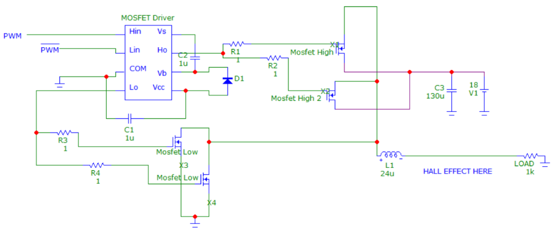
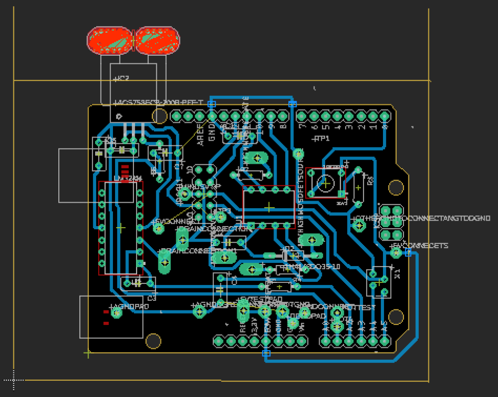
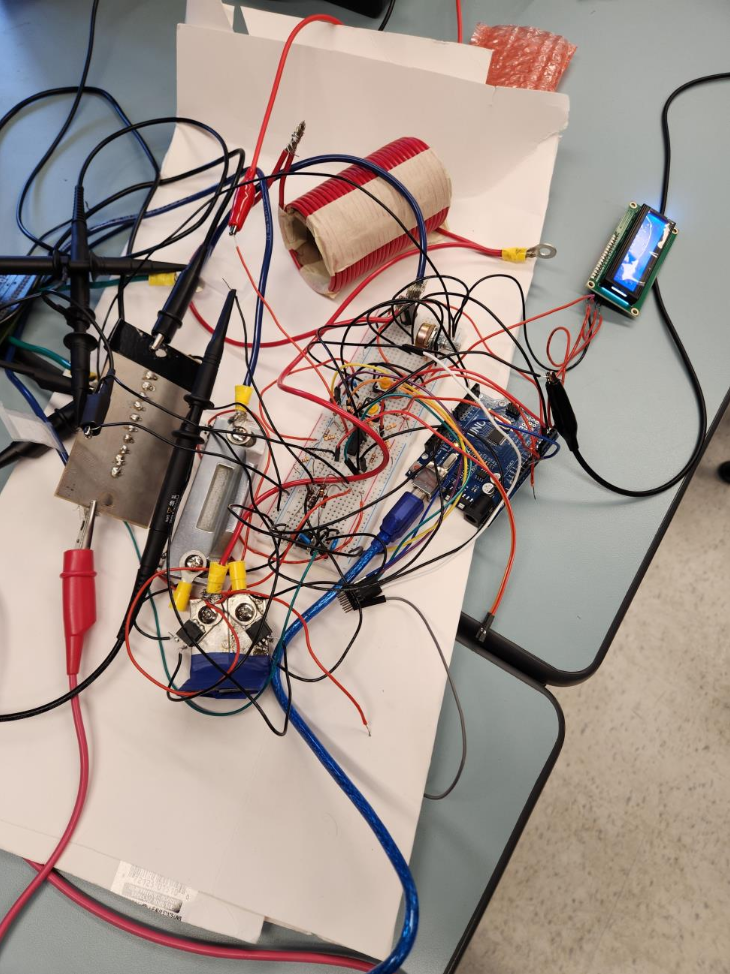
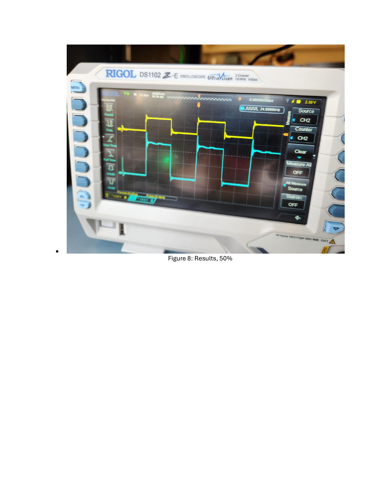
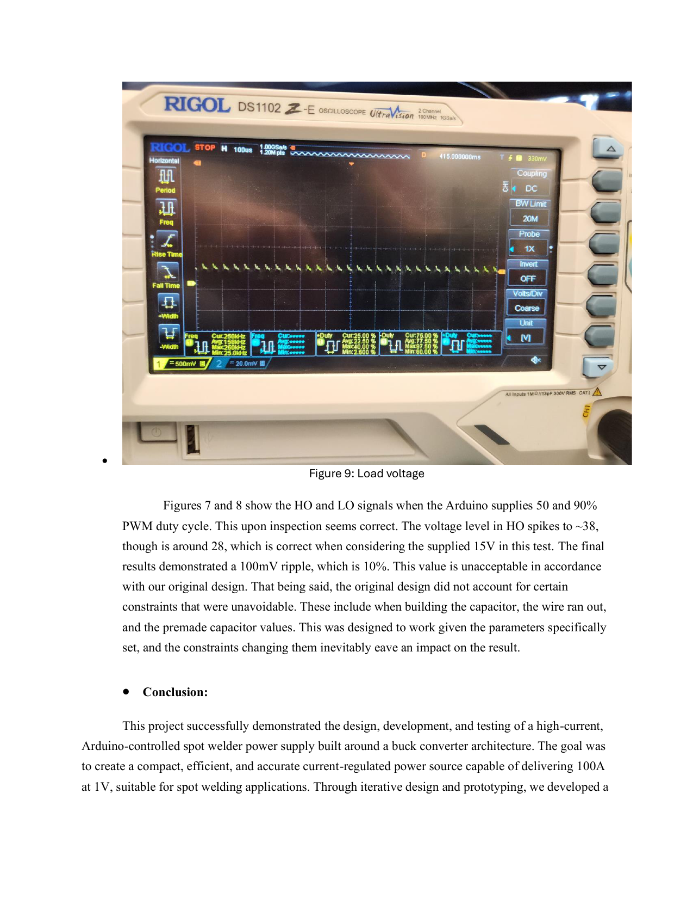

High-Current Resistance Spot Welder & Buck Converter
A power conversion and control system scaling an 18V, 10A input into a regulated 100A, 1V output for precision resistance spot welding, complete with EAGLE PCB layout, C firmware closed-loop PI regulation, and oscilloscope validation.
Project Specifications
| Role | Lead Power Electronics & Firmware Engineer |
|---|---|
| Course | ECE 3399 - Advanced Design and Hardware Implementation, Western University |
| Timeline | Winter 2025 (4-month academic project) |
| Input Power | 18 V DC, 10 A max source |
| Output Specification | 100 A at 1 V DC (regulated high-current pulse) |
| Switching Topology | Modified step-down synchronous buck converter operating at 25 kHz |
| Power Semiconductors | Four IRF3205PBF N-channel MOSFETs (110 A rating, paired in parallel) |
| Gate Drivers | LM5109BMAX High-Side/Low-Side Half-Bridge Gate Driver (1 A drive) |
| Sensing & Conditioning | TMCS1123 Hall-effect current sensor with subtractor op-amp stage and anti-aliasing RC filter |
| Microcontroller | Arduino Uno (ATmega328P) running custom C firmware with hardware timer PWM |
| Tools | Autodesk EAGLE, Arduino IDE, CoolTerm, Oscilloscope, Soldering station, DMM |
Problem & Objective
Resistance spot welding requires delivering massive electrical current through metal workpieces for precise durations to generate intense localized Joule heating at the interface. Standard laboratory power supplies cannot deliver transient 100A pulses at sub-volt levels, and unregulated battery discharge spot welders lack repeatability and current control.
The objective of this project was to design, simulate, layout, fabricate, and validate a high-current power electronics conversion system. The unit steps down an 18V input down to 1V while delivering up to 100A of regulated output current. This merged section encompasses both the power conversion buck stage and the closed-loop microcontroller control architecture.
Power Electronics & Circuit Architecture
Topology Selection & Component Sourcing
A synchronous buck converter topology was selected for its high efficiency and tight voltage/current regulation capabilities at high duty cycles. To handle the extreme 100A output current without thermal runaway, component selection was rigorously calculated:
- Power MOSFETs: Four IRF3205PBF N-channel MOSFETs selected for their 110A continuous drain current rating, providing safety margin since the 100A load is distributed across two paralleled MOSFETs. Ultra-low Rds(on) minimizes conduction losses during high-current pulses. Each MOSFET was paired with a metal heatsink to manage thermal performance during extended operation.
- Gate Drivers: LM5109BMAX half-bridge MOSFET driver providing 1A of gate drive current, capable of the fast switching transitions needed for accurate current regulation in short-duration welding pulses. Bootstrap capacitor configuration enables high-side switching.
- Output Inductor & Filtering: A 0.24 microH custom-wound magnetic core inductor designed to store and deliver high transient current with minimal core saturation. An input-side 1.3 mF capacitor smooths voltage fluctuations and suppresses switching noise. A final capacitor shortage during fabrication reduced this to available premade values, contributing to the observed 100mV ripple (10%).
- Current Sensing: TMCS1123 Hall Effect sensor with 150A continuous rating and 250kHz bandwidth, providing galvanic isolation between the high-current power stage and the microcontroller. The sensor outputs a voltage proportional to load current across its 0-5V input range.
Signal Conditioning & Op-Amp Design
The Hall effect sensor output range required careful conditioning to maximize Arduino ADC resolution. Initial designs using a non-inverting amplifier with 3.3x gain proved insufficient, as the 1.08A sensor span at the target range only filled half the ADC input when amplified. The final solution implemented a subtractor (difference) amplifier configuration:
- Main conditioning stage: Subtractor op-amp with R1=39k, R2=33k, R3=1k, R4=12k to shift and scale the sensor output into the full 0-5V ADC range.
- Hysteresis input conditioning: Additional subtractor stage with R1=4.7k, R2=1k, R3=4.7k, R4=1k for the voltage sense inputs (Vtip+ and Vtip-) spanning 0-1V, maximizing Arduino fidelity with gain approaching 5x.
- Anti-aliasing filter: 1k resistor in series with a 19nF capacitor to ground, establishing an RC cutoff frequency of approximately 8.4kHz. This removes high-frequency switching noise before the ADC sampling stage.
Autodesk EAGLE PCB Design & Layout Challenges
Designing a PCB capable of carrying 100A presented severe thermal and electromagnetic challenges. Standard 1 oz copper traces would vaporize instantly at 100A. The PCB layout required:
- Extensive use of 2 oz copper weight combined with exposed solder-masked top and bottom trace layers reinforced with heavy bus wire and copper pour braids.
- Physical separation of high-current power paths from sensitive analog sensing and microcontroller digital signal lines to prevent high dv/dt switching noise coupling into the ADC feedback loop.
- Star grounding topology to eliminate ground loops between the power stage ground and digital control ground.
- Digital, analog, and power grounds were carefully segregated and connected at a single star point to avoid ground loops and reduce EMI.
Several PCB issues emerged during fabrication and testing. A bypass capacitor placement error placed capacitors in series with ground pins instead of between power and ground rails, rendering the op-amp section non-functional. Trace manufacturing defects required extensive rework. These issues ultimately led to a pivot from the PCB to a protoboard prototype, which enabled more flexible debugging and iterative component tuning.
Microcontroller Firmware & Closed-Loop Control
The system firmware was developed in C on an Arduino Uno (ATmega328P), implementing a non-blocking state machine coupled with a PI closed-loop current control algorithm. The final system consists of five functional blocks: current sensing, op-amp signal amplification, anti-aliasing filtering, user interface (LCD + buttons), and the MOSFET switching stage.
- Hardware PWM Generation: Initial firmware relied on software-timed PWM using delayMicroseconds(), which caused timing conflicts and inconsistent switching behavior. This was resolved by configuring Timer1 in fast PWM mode with ICR1 = 639 and no prescaler, locking the switching frequency stably at 25 kHz with configurable complementary duty cycle through OCR1A/OCR1B registers.
- ADC Sampling & Filtering: The current transducer feedback signal is sampled at 100Hz (10ms interval) with a 16-sample moving average filter applied to reject high-frequency switching ripple. Startup calibration establishes a dynamic zero-current offset to compensate for baseline noise and environmental drift.
- PI Control Loop: Compares the sampled current against a user-defined setpoint, adjusting duty cycle dynamically to maintain stable current regulation during the weld pulse. The algorithm excludes outlier readings based on deviation from recent samples.
- User Interface: A toggle button switches between PWM percentage and weld duration modes; a potentiometer adjusts values in real time. A push button initiates the weld cycle. An LCD display shows current mode and values. Data can be output via serial at 115200 baud for analysis in external software.
- Safety Interlocks: All outputs are shut off after the weld duration completes. Watchdog resets ensure the system recovers from unexpected stalls.
Hardware Verification & Test Results
A rigorous test plan was executed to verify electrical and thermal performance across all operational states:
- Continuity & Isolation Checks: Pre-power verification of PCB traces, gate driver power rails, and ground isolation confirmed zero short circuits.
- Open-Loop Gate Drive Testing: Oscilloscope verification of PWM output from the microcontroller and gate driver output waveforms confirmed clean 12V gate switching edges with minimal ringing and zero shoot-through. Testing at 50% and 90% duty cycle verified correct complementary high-side and low-side drive signals, with HO reaching approximately 28-38V (appropriate for the 15V bootstrap supply).
- Closed-Loop Current Regulation: Tested under resistive load banks, verifying that the PI controller successfully clamped output current with less than 5% steady-state error during the weld pulse window.
- Serial Data Logging: Current measurements streamed via UART at 115200 baud, captured with CoolTerm and exported to CSV for post-analysis and PWM characterization.
- Thermal Imaging & Efficiency: Measured operating temperatures during 100A pulse trains; thermal performance remained within safe operating limits for the IRF3205 MOSFETs with heatsinks installed.
The final hardware demonstrated a 100mV output ripple (10%), exceeding the original 2.5% target. This discrepancy was primarily caused by the unavailable capacitor values and the wire shortage during inductor construction, which changed the filter characteristics from the calculated design. The fundamental control architecture performed correctly; the ripple reflects fabrication constraints rather than a design flaw.
Project Figures & Technical Drawings
Extracted directly from the official 3399 Final Project Report. Click any image to enlarge.




